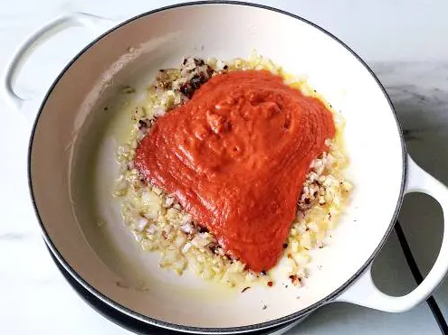
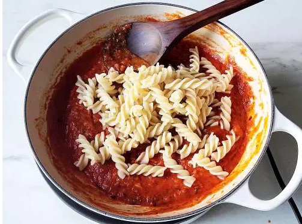
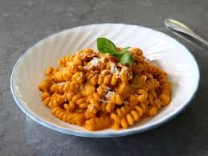

Homemade Red Pasta Sauce
This very simple and classic recipe can be made at home with very few ingredients. Enjoy making this recipe and I can guarantee that everyone will be asking for more!
Ingredients
- 3 - 4 garlic cloves(finely chopped)
- (1 3⁄4 cups) tomatoes (2 medium diced)
- 1/4 cup shallots or onions (finely chopped)
- 1⁄2 to 1 teaspoons red chili flakes (reduce for kids, adjust to taste)
- 1/4 teaspoon black pepper freshly crushed (optional + more to garnish)
- 1 1⁄2 cups (120 grams) fusilli or any other pasta (2 servings - about a cup or macaroni)
- 2 to 3 tablespoons extra virgin olive oil (divided)
- 1 teaspoon sea salt to cook pasta (+ more to season)
Instructions
- Heat a tablespoon oil in a pan and add 1⁄2 cup (70 grams) red bell peppers or white onions and sauté on a medium high heat for 4 mins until blistered.
- Add about 250 grams (13⁄4 cups) tomatoes (2 medium diced) to the same pan and saute on a medium high heat until the tomatoes turn mushy. Alternately you may also do this in the oven. Spread tomatoes and bell peppers on a baking tray and add a tbsp. of oil. Bake for 15 mins at 425 F - 220 C, until the tomatoes are softened. Or Air fry for 9 mins at 390F / 200 C.
- Add the tomatoes and chilli flakes to a blender
- Blend to a smooth consistency
- Bring 6 cups of water to a rolling boil and add the pasta. Remember: ALWAYS SALT THE WATER!!
- On a medium high heat, cook al dente which is approximately 11 mins
- Collect half cup paste water for later use to thicken the sauce. You can drain the pasta with a colander
- Heat a pan with oil and add the garlic. Saute for a minute and the onions.
- Saute until transparent. Stir in the chilli flakes and pour the tomato puree. 
- Saute for 3 to 4 mins and pour the pasta water we had collected earlier
- Cook for another 3-4 min until thick. Add herbs, black pepper and salt if needed. Taste test and add sugar if your sauce is too tart.
- Stir the pasta into the red sauce 
- Garnish with parmesian cheese(optional)
- Serve and Enjoy!!!! 